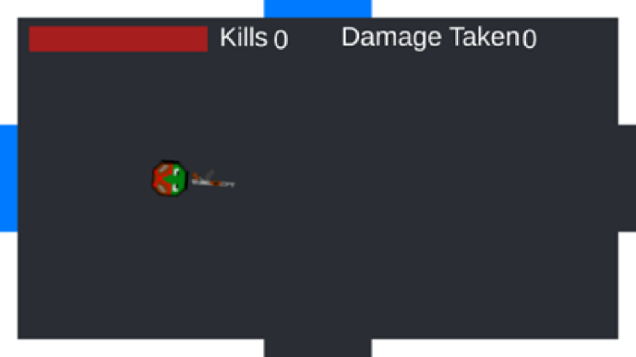
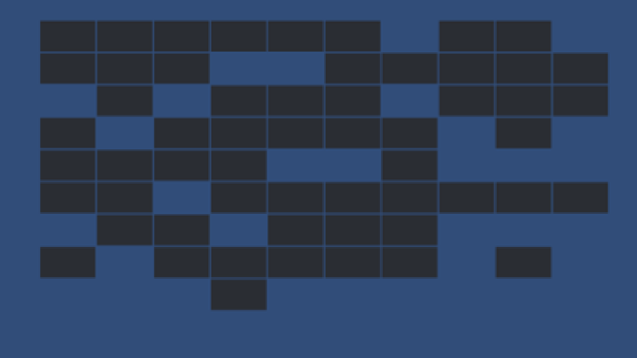

This was my first game that I made independently.
It’s a simple roguelike where the player must find the exit
while fighting through a random map with a random number of enemies. To create it I used Unity Game Engine, Visual Studio
and programmed in C#.
Dit is de eerste game die ik helemaal alleen heb gemaakt.
Het is een simple Roguelike spel waar het doel ik het einde te vinden terwijl je met vijanden vecht
in een willekeurige map.
Ik heb dit gebouwd in Unity Game Engine, Visual Studio en gebruikte de codeertaal C#


The map consists of 100 rooms in a 10-10 grid.
At the beginning of the game each room has a chance to spawn in which creates the random aspect.
This can lead to the first room and the final room not being connected to each other,
so that when happens the rooms will continue to randomize until a playable map is created.
De map bestaat uit 100 kamers die in een 10-10 grid liggen.
De kamers liggen op een willekeurige manier op de map doordat iedere kamer aan het begin van het spel een kans hebben om
niet in te spawnen.
Misschien liggen hierdoor de eerste en laatste kamer niet via andere kamers tegen elkaar aan,
waarna dan de kamers opnieuw een pad genereren totdat en speelbaar veld op de map ligt.

When the player enters a room 1-3 enemies will spawn in.
They will automatically go to the location of the player, and when they collide the player will take damage.
Only when all the enemies are dead the player can continue to the next rooms.
The player can kill the enemies with a gun that aims at the location of the mouse.
Shooting works just by clicking anywhere on screen.
It will fire a projectile that kills the enemies in 3 hits.
To make sure that the player can reach the end healing items may be dropped when an enemy dies.
Iedere keer dat de speler een kamer binnen loopt spawnen er 1-3 vijanden.
Zij volgen meteen de speler om schade te doen door de speler aan te raken.
Pas als alle vijanden dood zijn mag de speler door naar de volgende kamer.
De vijanden kunnen doodgemaakt worden met het geweer, door met de muis te richten.
Je kan schieten door met de muis te klikken, wat een kogel afvuurt. Er zijn 3 kogels nodig om en vijand te doden.
Voor het geval dat de speler het einde niet kan bereiken omdat het te moeilijk is laten de vijanden mogelijk healing
vallen om op te pakken.